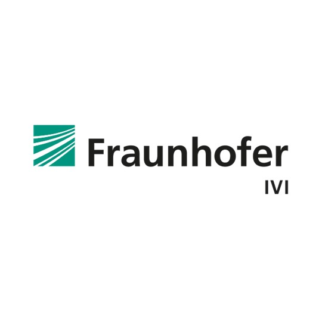
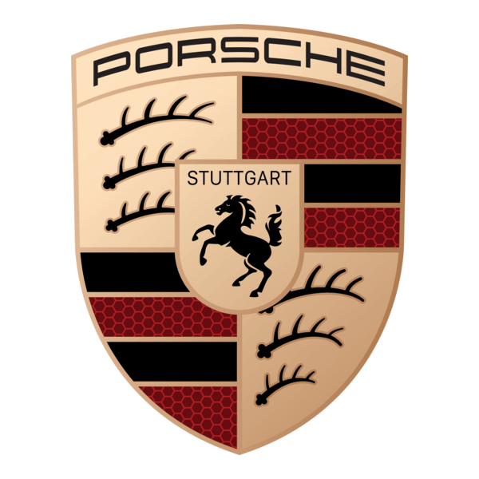
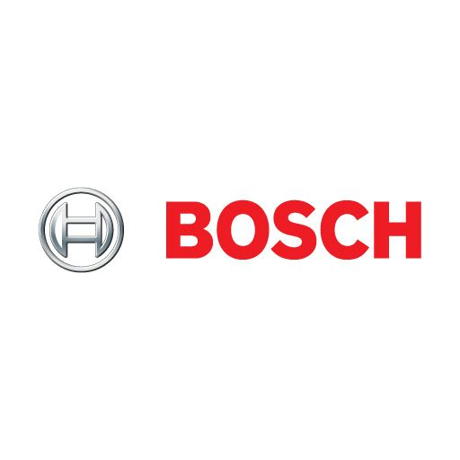
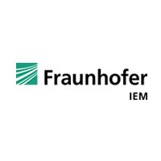
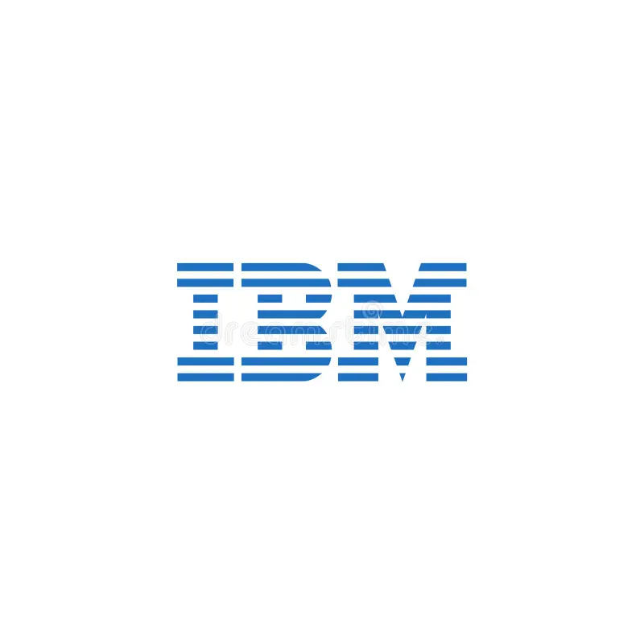

Work Experience
Berufserfahrung
Over nine years across embedded software, perception systems, and applied AI research, spanning Germany and India.
Mehr als neun Jahre in Embedded Software, Wahrnehmungssystemen und angewandter KI-Forschung, in Deutschland und Indien.

Contributing to the 5GoIng First-Mile intelligent mobility project through the development and optimisation of advanced perception pipelines for connected and autonomous systems. Current work includes 3D scene reconstruction, multi-sensor fusion, and RGB–IR calibration, alongside research on AI-assisted multi-object tracking and state estimation. Focused on integrating classical estimation methods with modern learning-based approaches to enable robust, reliable, and real-time perception for intelligent mobility applications.
Beitrag zum 5GoIng First-Mile-Projekt für intelligente Mobilität durch die Entwicklung und Optimierung fortschrittlicher Wahrnehmungspipelines für vernetzte und autonome Systeme. Aktuelle Tätigkeiten umfassen 3D-Szenenrekonstruktion, Multi-Sensor-Fusion sowie RGB–IR-Kalibrierung, ergänzt durch Forschung zu KI-gestütztem Multi-Objekt-Tracking und Zustandsschätzung. Schwerpunkt ist die Integration klassischer Schätzverfahren mit modernen lernbasierten Ansätzen zur Realisierung robuster, zuverlässiger Echtzeit-Wahrnehmung für intelligente Mobilitätsanwendungen.

Optimised advanced Embodied AI models to improve performance and computational efficiency for real-world autonomous systems. Integrated models into existing system pipelines, ensuring seamless deployment and reliable operation under varying environmental and hardware conditions. Conducted systematic testing and validation in both simulation and on physical platforms.
Optimierung fortschrittlicher Embodied-AI-Modelle zur Verbesserung von Leistung und Recheneffizienz für reale autonome Systeme. Integration in bestehende System-Pipelines mit zuverlässigem Betrieb unter variierenden Bedingungen. Systematisches Testen und Validieren in Simulation und auf physischen Plattformen zur Sicherstellung der Produktionsreife.

Designed and implemented efficient parking solutions leveraging SLAM algorithms, LiDAR, camera, and computer vision techniques on resource-constrained embedded platforms. Developed and validated the perception pipeline in both simulation environments and directly on the vehicle, achieving seamless real-time integration that enhanced parking assist system accuracy within strict hardware constraints.
Entwurf und Implementierung effizienter Parklösungen mit SLAM-Algorithmen, LiDAR, Kamera und Computer-Vision-Techniken auf ressourcenbeschränkten Embedded-Plattformen. Entwicklung und Validierung der Wahrnehmungs-Pipeline in Simulation und direkt im Fahrzeug, mit nahtloser Echtzeit-Integration und deutlich verbesserter Einparkhilfesystem-Genauigkeit.

Contributed to the development, modelling, and engineering of ViPER modules for advanced parking assist systems. Applied requirements engineering to L3 camera-based systems, verifying and validating specifications against ISO standards. Collaborated across cross-functional teams to optimise system reliability and functional performance in parking assistance functions.
Mitarbeit bei Entwicklung, Modellierung und Konstruktion von ViPER-Modulen für fortschrittliche Einparkhilfesysteme. Requirements Engineering für kamerabasierte L3-Systeme, einschließlich Verifikation und Validierung der Spezifikationen gegen ISO-Normen. Enge Zusammenarbeit mit funktionsübergreifenden Teams zur Optimierung von Systemzuverlässigkeit und Funktionsperformance.

Designed and developed a Car-to-Cloud demonstrator using Formula 1 telemetry data to illustrate the integration between embedded systems and cloud platforms. Contributed to the KUKSA research project for Software-Defined Vehicles, implementing odometry and telemetry data extraction and leveraging cloud-native technologies for real-time analytics and IoT functionality.
Entwurf und Entwicklung eines Car-to-Cloud-Demonstrators auf Basis von Formel-1-Telemetriedaten zur Illustration der Integration zwischen eingebetteten Systemen und Cloud-Plattformen. Mitarbeit am KUKSA-Forschungsprojekt für Software-Defined Vehicles, mit Implementierung von Odometrie- und Telemetriedatenextraktion sowie Cloud-Native-Technologien für Echtzeit-Analysen und IoT-Funktionen.
Developed service layer functionalities for the DCM package in compliance with AUTOSAR and ASPICE standards. Implemented OBD platform module functions for ASW components and enhanced diagnostics infrastructure for leading OEMs including Daimler, Volkswagen, and Honda. Debugged and validated OBD functional modules, drawing on deep expertise in functional safety, ADAS/AD systems, and ECU diagnostic protocols.
Entwicklung von Service-Layer-Funktionalitäten für das DCM-Paket gemäß AUTOSAR- und ASPICE-Standards. Implementierung von OBD-Plattformfunktionen für ASW-Komponenten und Verbesserung der Diagnoseinfrastruktur für führende OEMs einschließlich Daimler, Volkswagen und Honda. Debugging und Validierung von OBD-Funktionsmodulen mit fundierter Expertise in Funktionaler Sicherheit, ADAS/AD-Systemen und ECU-Diagnoseprotokollen.

Developed and implemented test automation scripts, significantly streamlining the testing process and increasing overall efficiency. Designed and deployed functional tasks for OpenVMS Mainframe Systems across multiple programming languages. Planned and executed complex system changes (including server node migrations and cluster booting) while maintaining a 99.5% SLA availability.
Entwicklung und Implementierung von Testautomatisierungsskripten zur deutlichen Optimierung des Testprozesses und Steigerung der Gesamteffizienz. Entwurf und Deployment funktionaler Tasks für OpenVMS-Mainframe-Systeme in mehreren Programmiersprachen. Planung und Durchführung komplexer Systemänderungen (einschließlich Server-Node-Migrationen und Cluster-Starts) bei einer SLA-Verfügbarkeit von 99,5%.